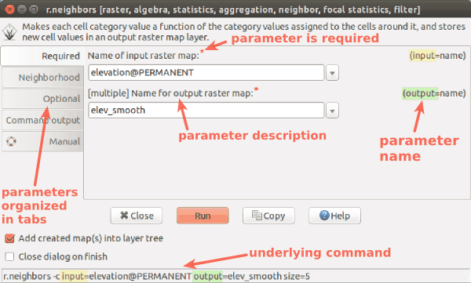

GRASS GIS
Getting Started
NCSU GeoForAll Lab
at the
Center for Geospatial Analytics
North Carolina State University
Corey White
Doug Newcomb

NCGIS 2019 Winston-Salem
Licensing
- According to Stallman (2002),
there are four freedoms that as a user you should have:
- the freedom to use the software for any purpose,
- the freedom to change the software to suit your needs,
- the freedom to share the software, and
- the freedom to share the changes you make.
Stallman, R. M. (2002). Free software, free society: selected essays. Ed. by J. Gay. 1st. ed. OCLC: 253840339. Boston, Mass: Free Software Foundation. 220 pp. ISBN 978-1-882114-98-6.
GRASS GIS
-
Timeline:
- 1983 started at US Army CERL
as land management system
- Historical promotional video (1987) narrated by William Shatner doi.org/10.5446/12963
- evolved into general purpose GIS
- 1999 GNU GPL, international team of developers
- 2008 OSGeo Project
- 35 years of GRASS GIS development in 2018
- check out last change (probably just few hours ago)
- last release Jan 21, 2019 [last checked Feb 2019]
- 1983 started at US Army CERL
as land management system
Processing Capabilities Overview
- raster and 3D raster
- map algebra, DEM, interpolation, flow, neighborhood, solar, cost surfaces, ...
- imagery (remote sensing)
- rectification, multispectral, classification, segmentation, PCA, FFT, ...
- vector and database
- buffers, overlays, networks, topology, attribute management, SQL, ...
- spatio-temporal data (time series)
- sampling, statistics, aggregation, temporal topology, algebra, ...

General Capabilities Overview
- visualization
- 2D display, 3D visualization, temporal visualization, PNG, PS and PDF maps, ...
- interoperability
- import from and export to different formats, WMS, ...
- extensibility
- scriptable (e.g. Python), custom tools (typically Python or C), ...

Research Use
- Used as a research platform and code repository
- Example: Solar radiation model (r.sun)
- available since 1993
- major changes in 1996, 1999, 2002, 2003, 2006, 2008, 2017
- parallelized version in 7.4
- by Jaroslav Hofierka et al.

summer solstice dynamics on lidar DEM (Centennial Campus)
Software Description
- portable:
- many operating systems: MS Windows, Mac OS, Linux, ...
- 32bit and 64bit versions
- high-end desktops, low-end laptops, Raspberry Pi, High-Performance Computing clusters, ...
- single integrated software
- functionality divided into modules
- written in C and Python

Naming of Modules
| Prefix | Functionality | Example |
|---|---|---|
| r. | raster processing | r.mapcalc: raster map algebra |
| v. | vector processing | v.surf.rst: interpolation from points |
| g. | general management | g.remove: removes maps |
| d. | display and rendering | d.rast: display raster map |

User Interfaces
- Functionality divided into modules (over 500)
- Modules can be accessed using:
- Graphical User Interface (GUI)
- Command Line Interface (CLI)
- Python

GUI
- The interface for desktop

GUI for modules
- All modules have standardized, unified interface layout.

Standard dialog (form) for the r.neighbors module
Command Line
- The baseline interface for efficiency and reproducibility
- Available in GUI as Console with autocomplete functions
r.fill.dir input=elev output=fill direction=dir
Python
- grass package part of GRASS GIS
- access to modules, but also to internal C functions
- integrated Python editor
- integrates with Jupyter Notebooks
import grass.script as gs
gs.run_command('r.fill.dir', input='elev',
output='fill', direction='dir')

Duality between GUI and commands
Command line (Bash):
Python:

Python:
Examples in the documentation and class instructions are usually provided as commands which can be used to fill in the GUI, write Python code, or run them directly.
3rd Party Interfaces
- QGIS (Processing Plugin and GRASS Plugin)
- R (rgrass7 package)
- ...

3rd Party Interfaces
- Tangible Landscape
- tangible user interface to GRASS GIS and Blender
- by NC State University, Center for Geospatial Analytics
Modules running: v.surf.rst, r.contour, r.fill.dir, r.sim.water
APIs
- native:
- C
- Python
- command line
- 3rd party:
- R (rgrass7 package)
- Ruby (grassgis gem)
- Java (JGrasstools library)
- as backend:
- QGIS Processing (Python and R APIs)
- gvSIG JGrasstools Spatial Toolbox under development
FOSS Ecosystem: Example of a Scientific Desktop Setup
- QGIS, GRASS GIS
- GIS, remote sensing, cartography
- R, Octave, Python
- statistics, linear algebra, scripting, automation
- SQLite, PostgreSQL with PostGIS, LibreOffice
- database, tabular data
- Inkscape, Gimp, ImageMagic
- vector graphics, raster graphics
- Portability: works on Mac, Linux, Windows
- Interoperability: programs designed to work with others
- Flexibility: standards and open formats allows to switch different components
- Scalability: can be copied to more machines at no cost
GRASS GIS in the FOSS Ecosystem
, R, SAGA GIS, GDAL- scripting
- Python, R, Bash, Perl, Ruby ...
- Web interface
- OpenLayers or Leaflet, Django or Flask
- database (spatial and non-spatial data storage)
- ZOO-Project, PyWPS, GeoServer, or QGIS Server
- processing server and spatial data publishing server
Spatial Database
Selecting Mapset
- Selecting database, location, and mapset

Computational Region
- extent and resolution for raster computations
Documentation: Public Author & Accessible Code

Documentation: Link to Research Papers

Asking Questions
- Mailing list discussions (archived since 1991)
- GIS StackExchange, ...
- Commercial support
Addons Repository
- user contributed modules, plugins, tools, functions
- distributed to users
- including compiled C and C++ for MS Windows
- automatically generated GUI for Python and C/C++

Peer-reviewed Implementation
- Example:
- user tested the module
- discovered error in equation in code

Summary
- Licensing: No "purchasing of licenses" needed for users
- Support: Community and commercial
- Students: Start with course message board now; try mailing list or GIS StackExchange later on
- Several user interfaces
- Class instructions are using GUI and command line
- Python and Jupyter are recommended for the projects
- Data in database, locations and mapsets
- Raster operations in a specified computational region